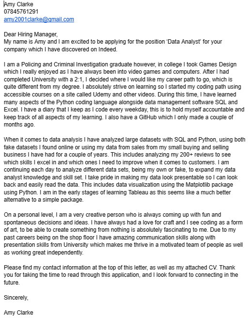
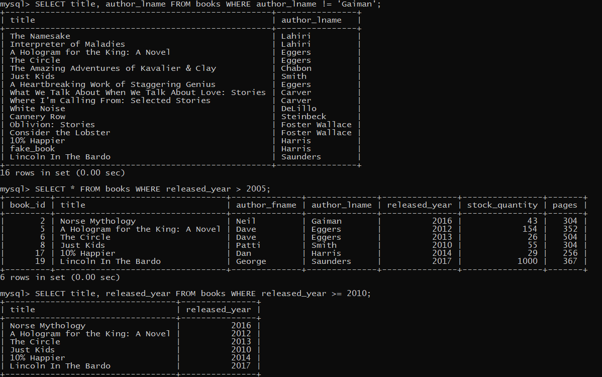

What I have learned today
This page is designed as a diary for my progress in learning code and to hold myself accountable to do and
continue learning. It is a place where I, and others, are able to come and check on my progress to see what material I have covered and which I am yet to learn.
The code will mostly consist of Python and SQL.
The dates start is ascending order, the newest entry will be closest to the top.
27/07/2023 (Tableau)
Today I created a line chart to show the continuous increase of better sleep compared to how much physical activity
a person does per day. There is a continuous large increase from 50 pa level until 85, however, this significantly decreases
from 85 to 90 and people who do the most physical activity (85-90) have roughly 6.9 hours of sleep per night compared to
75-80 pa level who have 7.9-8.1. Why is this? According to this source: sleep foundation
, some forms of exercise can 'decrease sleep quality' and prevent us from getting enough rest. Another interesting point found was
they say it depends on age. I will create another chart to show this and to prove its hypothesis.

26/07/2023 (Tableau)
I have spent today applying for a couple of NHS jobs and creating another worksheet in Tableau. This worksheet shows
the average sleep quality of each given occupation. This clearly shows that engineers, lawyers and accountants have
the best sleep quality whereas, sales representative and scientists have the worst (from this group of participants).
Why is this? According to this source Resources Workable
, people who work in sales tend to deal with the public and deal with stress inducing situations such as group meetings
and presentations which could lead to the decreased sleep quality.

25/07/2023 (Tableau)
Today I created the first sheet for my interactive dashboard on the sleep and health dataset I have been working on.
This first gantt chart is a very simple on however, tomorrow it will have an option to change the sleep duration to
sleep quality so the user is able to select which one they want to view. This chart shows the sleep duration, in hours
as a float and the BMI categories, overall showing the BMI group which has the longest sleep duration and the shortest. From
this chart it shows overweight people have the shortest sleep duration and the normal category has the most sleep overall..

20/07/2023 (SQL)
I have spent the first half on my day answering the statement from yesterday and making a new business question
for me to answer. The most stressful jobs for overweight people is a nurse and salesperson. The most stressful
job for a normal weight person is a doctor. This was strange so I did some research and it's most likely because
doctors have much more of a higher wage and can afford a healthy lifestyle and don't work nearly as many hours as
nurses. RThe new question I will be focusing on answering tomorrow is: "Q3: Does having a sleep disorder affect
how much physical activity a person can do?" The starting quires is just to find out how many people from the
sample has a sleeping disorder, which the majority
of people didn't.


19/07/2023 (SQL)
Today I have written a few queries in response to a business statement that I had my partner come up with.
The statement is 'Occupation against stress level and heart rate.' I wanted to see if stress levels in some
jobs are worse than others, comparing the heart rate let me see which ones are truly stressful compared to those
that state they are. For heart rate, BMI and physical activity plays a huge role in the given statement which
I will dive into more tomorrow.


17/07/2023 (SQL)
Today I have been answering the question 'What is the sleep duration compared to BMI and Physical Activity Levels?'
with the data set I have been working with. This was answered by doing many similar queries connecting all three columns
together and grouping by the sleep duration. The comments are describing my findings, I have done some research
to back up my findings. Tomorrow I will be answering another question which will also be backed up with research.
I will be putting all of these findings into an interactive dashboard on Tableau to further show the data.


8/07/2023-12/07/2023 (SQL)
I have finally managed to be able to import data from a CSV file into MySQL using the import wizard. I think my
processor is too slow to be importing data with over 200,000 rows of data, so I did it with a dataset that only had 375 rows.
This took less than 2 minutes to import. Over this period of time I have been figuring out how to import data, I have
learned many ways to do so including INFILE which I will focus on another time when my processor is
upgraded.
The dataset I will be using is sleep health and lifestyle, I want to figure out and create a dashboard on what type
of jobs people do result in the lower sleeping hours and stress levels. There are a couple of aspects to this dataset which I will be
exploring using MySQL and finally in Tableau.
This image below shows the data which was imported into a database then its own table.

05/07/2023 (SQL)
For the past few days I have been experimenting and learning a lot of different ways to import data from a CSV file
to MySQL. The dataset I am focused on is covid 19 which is a very large file. This has been difficult for me to import into
MySQL due to the quantity of the data. I am still in the rabbit hole trying to figure out why it isnt working, however
this is a good learning experience as I'm learning a lot more about how SQL works and different import, export types that
can be used in the future.
28/06/2023 and 29/06/2023 (Python)
I have spent today and yesterday how to use BeautifulSoup to web scrap data from my depop account. I have done everything
correctly however, it keeps returning 0 and or none. This has been very frustrating as I have tried many
ways, I think I will have to resport to something like Selenium as this is clearly not working. I have web scraped using
BS before but for some reason this time it refuses to work, I'm spending these next few days trying to get it to
work so I can export to CSV and import it into SQL where I can conduct my analysis and add it to Tableau.
27/06/2023 (SQL)
I have finally finished the MySQL course on Udemy and have got a certificate. This means that I am able to move onto
more advanced SQL such as gathering data and visualising it in Tableau. Today I completed a couple of challenges
using the instagram data gathered. This allowed me to use all of my previous SQL knowledge and test my skills.


The certificate says my partners name as he was the one who owns the account and already had some Python courses
on which I took instead of purchasing the course again. The paragraph at the bottom shows it's addressed to me.
23/06/2023 (Updating CV)
Today's main focus has been updating myu CV with all the new skills I have acquired when learning SQL and
Python along with Tableau. This should hopefully show employers how dedicated I am at learning these data analysis
skills and my GitHub shows me putting my skills into action to prove myself.
21/06/2023 (Tableau)
Today has been the most progression I have made when it comes to Tableau. I had found a detailed tutorial online
walking me through each step on how to create a Netflix dashboard. Doing these code a long videos is helping
me understand what each section does and all the different things that Tableau is able to do. I feel much
more comfortable using Tableau after finishing this dashboard, and I am going to create my own in the future.
This dashboard consists of many different elements, showing different genres and a heat map of the most movies
released. There is even an interactive element at the top where the user can choose either a movie or tv-show,
and it will instantly show things like the description and genre of that particular film/show.
20/06/2023 (SQL)
Today I have gone along with the tutorial I am following on Udemy and I have imported a large amount of instagram
data which I have began to analyse. This data consists of peoples usernames, pictures, tags and so on which I have
spoke about previously when making the tables and database. The first piece of information I wanted to find was
which day would it be best to post an instagram advertisement, From this I needed to find which day most people
created their accounts on which was a Sunday and Thursday for this particular group of people. The next was to award
the person with the most likes out of all the images. To do this I had to join three of the tables to be able to
collect the correct information needed.
19/06/2023 (Tableau)
For the past couple of days I have just been watching a lot of YouTube videos trying to understand how to use
Tableau more. I want to fully understand the program and all the capabilities before entering a large
database to make myself more comfortable and stop any confusion. The video I am currently watching is:
Tableau Desktop Crash Course for Data Analysts. This is taking me
through the entirety of the program getting me used to all the different functions. There's an exercise which
I am yet to complete at the end of the video.
13/06/2023 (SQL)
Today's focus has been creating all of the tables needed to start imputing and analysing the data at a future
date. I created 7 tables all together and each one represents a different instagram function, such as followers
and likes also including the picture ids. This activity is hopefully going to help me understand the join
function a lot more than it's not just one or two tables like in the past. After this analysis I will move on
to collecting other, larger pieces of data to analyse and make into a Tableau dashboard to show my findings.
12/06/2023 (Python + Tableau)
Today I have decided to delve into Tableau and create some visualisations using league of legends dataset from
kaggle. I chose this topic to learn Tableau because it is something g I am familiar with and know a lot about,
hopefully making learning much more fun and easy. I have learned how to save to an Excel file using pandas
which will help me in the future when I need to clean data and import the new version into Tableau. For my first
little test of visualisation, I have created a small simple bar chart to show the massive difference in blue
wards placed compared to blue wards destroyed. This is something that I saw straight away, there needs to be
more players destroying enemy wards as this has a huge impact on the game due to the enemy consistently having
vision of players whereabouts.

This data is out of 9879 games.
09/06/2023 (SQL)
I have just been focusing on learning more windows functions. For the past couple of days I have watched a lot of
videos about Tableau and have been creating mind maps and notes of what I need and want to learn next. I decided
it would be best to learn how to use Tableau and SQL together. I tried Python with it, but I think it will be
much easier to learn SQL first and visualise the data. As for what I have done today, I spent most of it going
through more window functions, This includes RANK DENSE_RANK, ROW_NUMBER, NTILE, FIRST_VALUE LEAD and LAG. All
of these have been put to test in the employees tables with their salaries, so I can get a feel for the data and
see the functions working in true time.

06/06/2023
Today I have began to learn how to use Tableu. I have spent the day just browsing and watching professionals
go through the program so that when I start, I will be familiar with how to iuse some functions and visualisation
techniques. I have also been looking through a site called kaggle which has a lot of different public datasets
which can be used and analysed. For tomorrow, I have written a plan of what I want to add to my portfolio, how
I am going to achieve this and picking some public data to work on.
01/06/2023 (SQL)
I have learned how to use some Window functions including over, partition by and order by. These all allow for
specific data to be outputted such as each individual row rather than a row being grouped.
31/05/2023 (Python)
Today I focused on cleaning the Disney data so that it would be much easier to analyse further down the line.
To do this I printed out the first handful of movies, so I could see if there was a common pattern being used that
needed to be changed. I noticed that some films didn't have table heads in its html code, so I filtered this with an
if statement and turned strip to true. I then thought it would be easier to read if the duration of the movie was
just a number instead of '85 minutes'. To do this I just split it up by the space and grabbed the first [0] element.
A couple of movies had a blank running time so I set this to show N/A so it would be clear which movies didn't have
this number.
30/05/2023 (SQL)
I have learned how to use: views, having, rollup and some different modes.
Learning views was fairly simple, and it seems to be a great tool, this includes creating a 'table' which has
multiple tables inside so the data is able to be manipulated as its own object instead of sifting through and
joining a lot of tables. Having and rollup are two functions I learned which are just an additional resource
which will prove to be useful later on down the line. I managed to go through a few SQL modes such as strict_trans_tables
and no_zero_in_date which were quite simple to wrap my head around.
25/05/2023 (SQL)
All throughout my first and second parts of my day I have been focusing on getting to terms with the JOIN functions
and practicing incorporating loads of different functions together. When I first started to learn about joins I
found them pretty challenging which is why I took all today to practice. I have some examples of the longer lines
I completed in the images below. I learned about if statements also, which I was familiar with due to my Python knowledge,
which made it a lot easier for me to pick up and start adding these to my statements. I now know how to join many
tables and extract any data needed and display this in one neat table. Today I have really put a lot
of my skills learned from SQL into the statements, and I am becoming more and more confident with SQL everyday.
24/05/2023 (Python)
Today I continued with the Disney dataset from wikipedia, I mainly focused on trying to gather all the info boxes
for each film. This had some errors which still need to be fixed. However, the base code looks good and is fully
functional. There is over 400 different Disney titles that Jupyter Notebook needed to scrape which took a while
and I only displayed 10 titles to make it less cluttered and neat. I had to add a try and except function because
some of the href's were coming up as text without a link which was not allowing the code to run smoothly. I added
the get text so it would just show whatever text was displayed for the error text.
23/05/2023 (SQL)
Today I did a little more on the join functions and did some practice using left, right and inner joins.
I focused mainly on left and right joins and learning the differences between them both and what they can be
used for. I also got to learn the IFNULL function which allowed me to get rid of some of the nulls for the
purchases and replaced them with 0 to make the data more readable and neat.The second half of my day I created
my first Data Analyst cover letter to go alongside my CV as well as updating my LinkedIn to include my 10,000-word
dissertation I completed in University as this have loads and loads of data gathering and analysis using spss.
Qualitative and quantitative data analysis tools were used.

22/05/2023 (Python)
Today I decided to follow along to a Beautiful Soup webscraping tutorial which is focused around Disney movies
to be able to find out information such as the best and worst rated Disney movies of all time. Today I just
focused on getting the data and figuring out which specific html section to input to get the specific data needed.
I first started practicing with just Toy Story 3 and once I had this fully working, I moved on to try and gather
all the information boxes from all films listed on the wiki page. There was a couple of problems which I came
across which was fixed using stacked overflow. One of the problems was that in the budget section of toy story
there was "\xa0" before how much money was spent on the movie. To solve this issue I just replaced the exact
word with a space using the replacement key and this worked and the data is now readable. This was the same with
there being no space in some titles, to fix this I just changed strip to equal true which took away and
put a space back where it was supposed to be.
I have started the code for all the movies which is taking longer than expected, this will be resumed on
wednesday when I revisit Python.
This image shows the completed code for Toy Story 3, this will be repeated and recoded to scrape all of the
films data.
19/05/2023 (SQL)
Today I have focused on relationships between tables using MySQL workbench and command line. I have created
two separate tables with specific id's to specific people and orders which I used the JOIN function to create
a relationship between the two tables. I also used my new knowledge about cross and inner joins to interlink
these together. This is to allow for data analysis to be conducted using both sets of information. I have also
learned how to use the foreign key which only allows the input of 'real' id names and if any new orders were
places that wasn't assigned to a persons id then there would be an error and this data wouldn't be inserted.
18/05/2023 (Python)
For the first half of the day I have focused on creating graphs and displaying data to answer the business
questions such as 'what products are mostly sold together?' For this I didn't create a graph I just displayed
the data and the numbers next to it as I thought this would be the best to display this type of data as we
were only after the product name and the numbers. To do this I had to write some code which displayed all
the duplicated items purchased together. This needed intertools and collections to be able to function so I
imported those, this was so that the program could count and gather the information from specific rows.
The ony problem with this is that it was showing multiple times in
the list. To solve this, thanks to stack overflow, I found a way to drop all the unnecessary duplicated items
which left me with clean data to view. I used the key function and set this to false so that all the duplicated
orders would be shown.
The second data I wanted to show was how many of each product was sold in a bar chart. I used the knowledge
about matplotlib from the other graphs to help display and change how the graph looked and displayed. The final
graph I created was an overlay graph of a plot and bar chart. This allows for easy comparison between two rows.
The two rows I compared was the quantity of each product ordered and the price, this showed that the more
expensive a product was, the less it was purchased which was true in most of the cases according to the graph.
I did keep getting the same error of future warning however, I haven't yet discovered how to get rid of it,
all the code runs perfectly fine.
The second half of my day consisted of creating a new Jupyter Notebook and scraping to find the title of each
hashtags on a website with the best hashtags to use for Depop selling using BeautifulSoup and Requests.
Monday I will be creating tables and analysing the data in more advanced details.
15/05/2023-16/05/2023 (SQL)
Today and yesterday I focused on altering table and all the documentation which comes with it. I managed
to put this to the test creating and changing some random tables to practice. I have also learned check and
named constraints which will be very useful in the future if anything in a database needs to be updated and
or changed.
12/05/2023 (Python)
Today I have been focusing on analysing the given sales data which I have been doing the past week. I answered
the question 'What time should we display advertisements to maximise likelihood of customers buying product?'
To start answering this question I needed a new column which displayed the time of each order in just the hours
and minutes. To do this I used my skills from Python (before I started this diary) of DateTime to help separate
the times from the date. The results show the peak times for sales is both 11am and 7pm so the most efficient
time to advertise would be just before these times as it is the most likely to be seen by a lot more people.
The reason these times are peak might be because they are just as people are on lunch break or have just come
home from work. For this graph I used matplotlib again but instead of creating a bar chart I used a plot graph
to help get me used to the different ranged of charts.
11/05/2023 (SQL)
For the first half of my day I have learned all about the data and time functions and put these new skills
to test by creating a table with a couple of people with their name and date of birth and time of birth.
This allowed me to pick specific data from this table to practice these new functions. I have also learned
about decimal, float and double along with the difference between int, tinyint bigint, char, varchar,
curdate and time stamp. Most of these are to do with the amount of data they store. I have also focused
on update which allows me to find out, automatically, when a line in the table has been created and updated
which automatically updates the date and time. Date and time formatting was the best part I learned as there
are so many customizable options to work with using the documentation.


The second half of my day I focused on learning comparison and logical operators. The main ones focused on was
<, >, !=, >=, <=, OR, AND, CASE, IS NULL, IN, BETWEEN. All of these have been put to the test using the people
and the bookshop database, so I could use the information to practice. These will be helpful in analysing future
databases as it allows for me to do specific comparisons easily and neatly.


10/05/2023 (Python)
I have continued the work I have done from Python Pandas today by answering another question. The question
is 'What city had the most total sales in 2019?' I answered this by creating another column names Cities and
repeated the similar analysis I did last time for the months. I did run into a few issues which included all
the names being cluttered together at the bottom of the bar chart. This was fixed by stack overflow which
I learned I can style the x-axis to be vertical and the text size can be changed.
I created two functions which would be both city and state. I decided to create a different state one as there
was a couple of different cities which are named the same, this would make the analysis a lot more accurate.
To separate the city from the zip code nd all the other information, I used split which would be split at
the ',' and the state at the space. I had managed to use the f string which I have learned about in the past
to make the line of code alot shorter.
08/05/2023 (Python Pandas)
Today I have really tested my Pandas and Python knowledge within a large data set of online sales for a company.
This includes items sold, price and id along with what month they were sold. I have followed a tutorial
online which helped me through this process. I first concatenated all the month files into one large csv file
so that I could analyse the data set as a whole. I then created a month column which would display the month,
as a number, which will allow me to see them as a group later on. I then ran into a couple of problems which
were solved by the use of static overflow. The problems were that some columns has a NaN (Not a Number)
as a whole column which I was able to group together to remove. This wasn't allowing me to multiply the amount
sold with the price at it was classed as a sting. I added another column called sales, after I dropped the NaN
which was just the quantity purchased and the price.
I then grouped the data (groupby) into months and made the
data into a viewable bar chart using Matplotlib. This was my first time using this and I found it very easy and
I love that you are able to visualise data this was which would make it much more simple when explaining results
to someone else. The screenshots shown are from the video I was following as Jupyter was very bugged out as I
tried to save, this should be fixed by tomorrow. I will only show a few screenshots as the whole code will be
available on my GitHub page.
04/05/2023 and 05/05/2023 (SQL)
Yesterday I focused on trying to analyse my vinted reviews using CSV and Pandas on Pycharm however, I was
finding limited resources online on how to fix the errors in my code. I am still working on getting this
fixed. In the meantime, today, I have imported the review data into MySQL and created a new table and
database. From this I have been able to put to the test all of my new SQL skills I have been learning. I have
managed to analyse and group how many reviews I get to see where my strengths are when posting items
using this app. In previous days I had used web scraping to gather the data from Vinted which I used and
formatted it to be able to be inserted into the SQl table. I have found how many automated reviews I have
got and how many people have complimented the fast shipping. The images show which other groups I decided
to do.
40/212 reviews are me as the buyer so these do not matter.
55/212 said the word 'great' which indicates that they are happy with their purchase and with me as a seller as a whole.

27/212 total specifically mentioned the postage, along with the speed in which the items were sent out.
51/212 mentioned 'love' as either 'lovely seller' or 'love the item' which is one of my strongest attributes.

40/212 reviews are automated which means I get a 5 star positive review if they don't leave one, meaning that this group is not the data I am looking for when it comes to finding out my strong points.
03/05/2023 (Python)
Today I have focused on learning the basics of running a website server using flask, following on from the
28th. The course I was watching was outdated, so I went over to YouTube which helped me get started. With
this I learned how to create views and routes along with rendering HTML, URL parameters and query parameters.
I have found using flask difficult because of the outdated courses however, I will be focusing on this on the
days I learn Python whilst continuing to work on SQL to refine my skills and put them to test.

02/05/2023 (SQL)
I have learned some more functions today which consist of min and max, sub queries, group by and how to use
them interchangeably. I found the sub queries the most difficult as it has to have two different selects which
run separate but with some practice using the bookshop database, I am able to use it comfortably.


28/04/2023 (Python)
Today I hve learned how to create a web server using flask and understand some basic code to run on the
command line which will help me in the future, such as pip installing packages. I have also learned and put
into practice nesting, passing functions and Python decorators which I found relatively simple and will be
a nice addition to my Python knowledge.
26/04/2023 (Python)
Today I have learned how more about how to navigate selenium. I have created a projects which holds all of my
reviews from my Vinted account over the past two years. With this data, I am going to sort them into categories
such as 'sent on time' to see my strengths and weaknesses when it comes to people purchasing from my store.

24/04/2022 and 25/04/2023 (Python)
Today and yesterday I have struggled with using Selenium with Pycharm. I know that some lessons from the
course I'm taking are out of date. I spent all of yesterday researching and trying to find the best way to
use selenium, this included, how to make the browser stay open for more than one split second. I found two
ways of doing this, one was to import the time module to make it close in 1000 seconds, or the webdriver
options; which I prefer as it's more stable. I have finally got the base code down with a lot of practice
and researching. I have made a short program that allows me to Google anything I type automatically through
selenium.

20/04/2023 (SQL)
I have learned how to use the CONCAT and the SUBSTR functions both separately and combine to output initials
of listed authors.
19/04/2023 (SQL)
Today I have focused on practicing MySQL skills, creating, reading, updating and deleting (CRUD) data to get
used to using the command line and workbench together. I found this fun and easy to do so far. I am currently
working with data on books and authors. I have also
learned how to use the CONCAT() function.

18/04/2023 (SQL)
Today I have gained the knowledge to use auto increments, not null and all the basics needed to create a database.
I completed an insert exercise where I created a database for employees, this is where their name, age and
employment status is kept, along with a primary key.

17/04/2023 (SQL)
I have learned what MySQL and SQL is and what it does, downloaded everything I need to start this new course.
I have learned the basics of how to create databases and tables, how to access the data inside these tables and
DROP/ delete them. Also how to comment out code and write comments.
12/04/2023 (Python)
I have learned how to use the basics of Beautiful Soup and why it is important. It is able to be used to find specific
items in any website so that the data can be analysed.